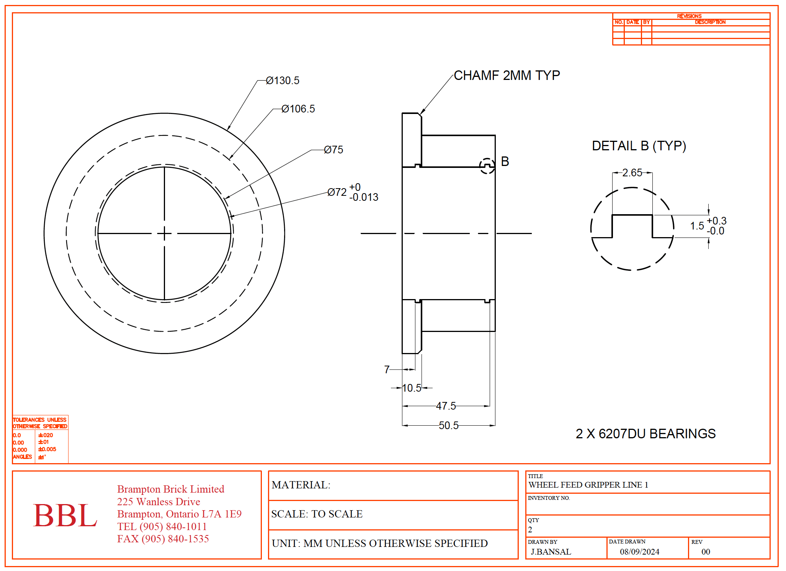
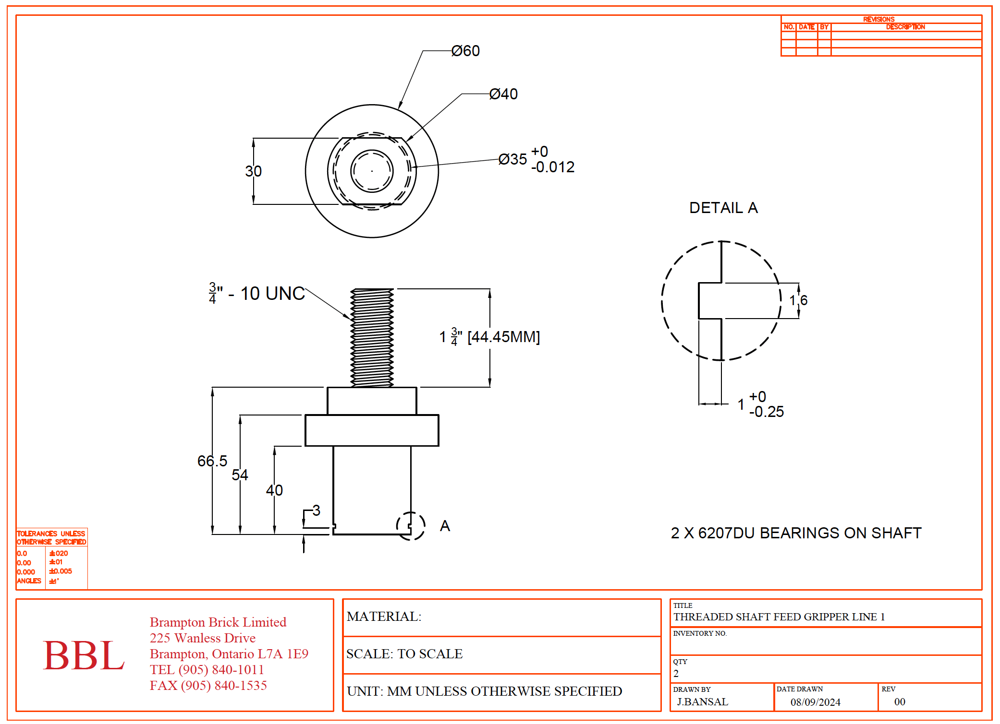
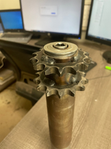
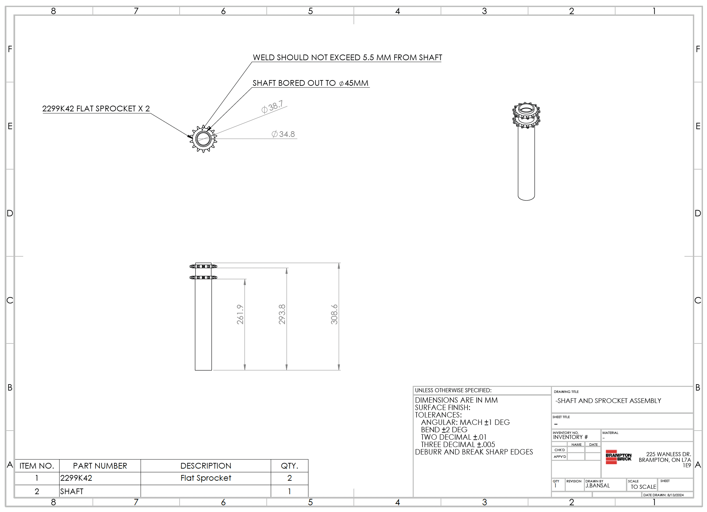

This page highlights three industrial component projects involving
physical hardware, CAD modeling, and engineering drawings. The work
focused on existing components and mechanical design considerations
to support maintenance, fabrication, and replacement.
01 — Feed Gripper Components
AutoCAD · Component Drawings
Created AutoCAD drawings of a feed gripper’s threaded shaft and wheel
to support component replacement and maintenance.
AutoCAD Wheel Drawing

Wheel — AutoCAD drawing.
Original Component & Shaft Drawing
Original feed gripper components

Threaded shaft — AutoCAD drawing
02 — Kiln Dryer Door Double Sprocket
AutoCAD · Shaft and Assembly Drawings
Created AutoCAD shaft and assembly drawings for a kiln dryer door
double-sprocket mechanism to support maintenance and replacement.
Modeled an existing conveyor shaft and sprocket assembly in SolidWorks.
Evaluated the weld requirements to maintain clearance between the weld
and the chain.
Original Assembly & SolidWorks Model

Original conveyor shaft assembly

Conveyor shaft — SolidWorks model
Determined the weld type and calculated the maximum allowable weld
size to maintain chain clearance and support smooth operation.